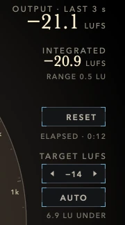
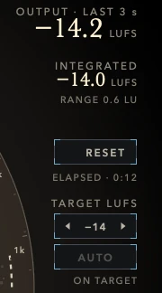
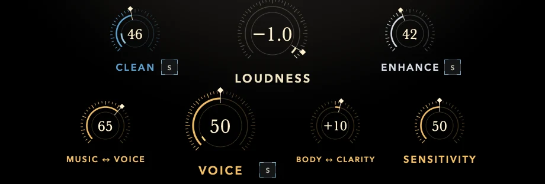
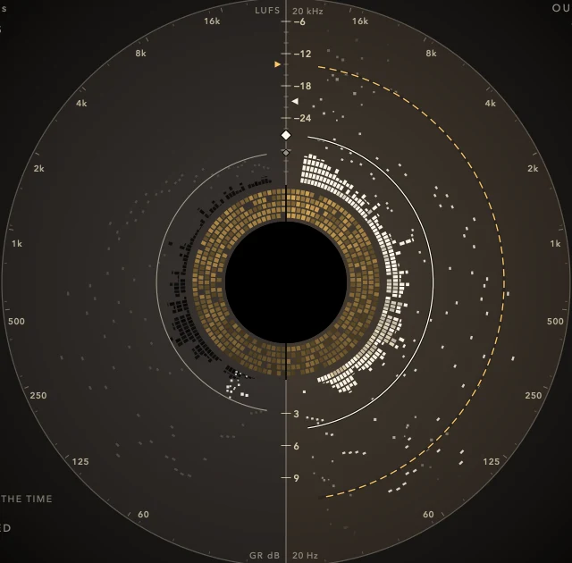
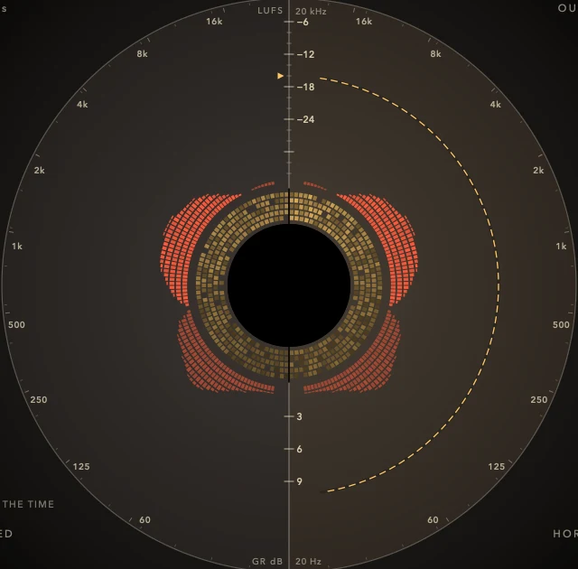
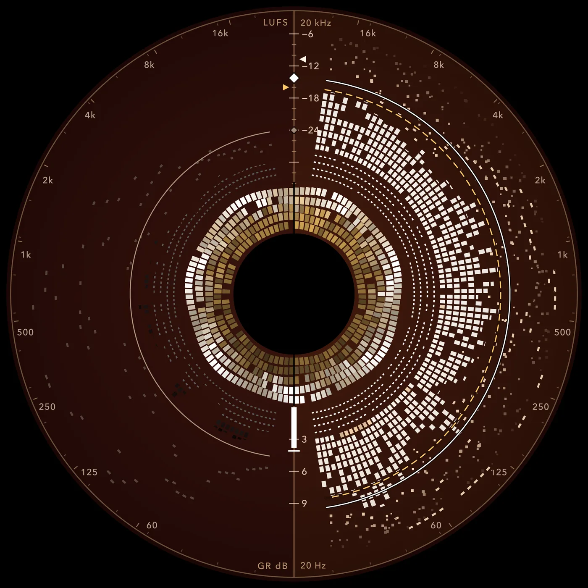
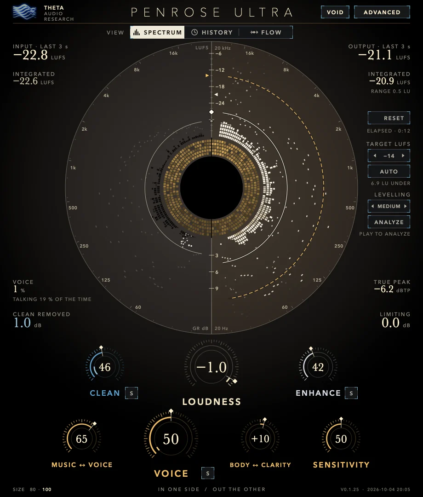
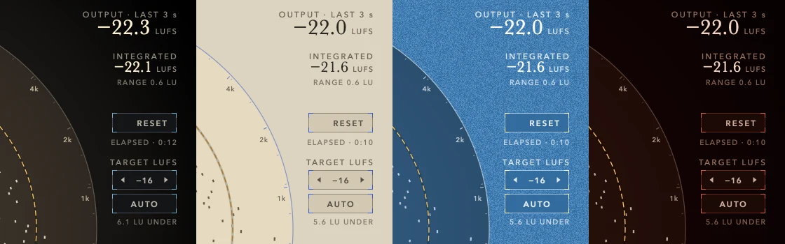
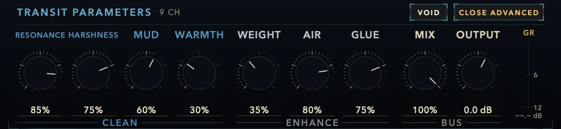

CLEAN S
Take out what gets in the way.
Removes mud, harshness and ringing, then warms what is left. Boomy rooms, spitty esses and muddy low mids come down without the mix losing its body.
IN THE DRAWER · RESONANCE · HARSHNESS · MUD · WARMTH
PENROSE ULTRA is an auto mixer for creators with no time to mix, or no wish to learn. Put it on your master, pick YOUTUBE, PODCAST, SHORTS or STREAM, play your edit through once and press AUTO. Your mix comes out cleaner, fuller and on target for loudness, with the voice lifted above the music when you want it.
No mixing knowledge needed. Every step below is one click, and every result is measured on your audio.
YOUTUBE, PODCAST, SHORTS or STREAM. Each one sets how much the voice is lifted, how it sits against the music, and the loudness target for that platform.
Play your timeline or bounce it once. PENROSE ULTRA measures the loudness of the whole piece and learns where it gets quiet and where it gets loud.
LOUDNESS turns to land your mix on the target, and LEVELLING, set by your preset, evens out the quiet and loud sections. Play it again to check. Done.


Every platform has a loudness it expects. Upload too quiet and you sound weak next to the video before yours. Upload too loud and the platform turns you down and squashes what is left. Set TARGET anywhere from −24 to −9 LUFS (−14 is the default) and AUTO gets you there.
The true peak never passes −1 dBTP, however far AUTO has to go.
When you want to go further than AUTO, the knobs say exactly what they change. Each sound knob has an S button that plays only what that knob is doing, so you can hear the change on its own.
Removes mud, harshness and ringing, then warms what is left. Boomy rooms, spitty esses and muddy low mids come down without the mix losing its body.
Adds weight, air and presence, then glues the mix together. The step that turns a rough edit into something that sounds produced.
Lifts the range where speech is understood and eases the music back underneath it, on the finished stereo mix you already have.
Raises the mix and holds the ceiling so peaks never clip. AUTO turns this one for you to land on your target.

PENROSE ULTRA's sound was rebuilt from the ground up for this release. It works the way a good mix engineer listens: it treats quiet moments and loud moments differently, instead of putting one fixed EQ over everything.
Turn CLEAN and ENHANCE up and you get all of it at once. No extra controls to learn.
You have the final mix. The music bed is a touch hot, the host is a touch buried, and the separate tracks are long gone. VOICE works on the stereo file you already have.
Turn it up and four bands where speech carries its meaning come forward: body at 500 Hz, clarity at 1 and 2 kHz, presence at 4 kHz. Their depths follow the band-importance weights of the speech intelligibility standard (ANSI S3.5), so the help goes where listeners actually catch words. At the same time two bands where music keeps its energy, 90 Hz and 250 Hz, ease back, clearing the low end that buries a voice.
It follows the talking. When someone speaks, VOICE leans in. When they stop, it lets the music be music.
It changes balance, not loudness. VOICE measures exactly what it added and takes that much back, so turning it moves the voice forward without a jump in level fooling your ears.
Press S next to any of the three sound knobs and PENROSE ULTRA plays only what that knob changes.
S on CLEAN plays what CLEAN is changing, which is mostly what it takes out. If you hear mud and hiss, good. If you hear the voice itself, back CLEAN off.
S on ENHANCE plays the weight, air and presence being added, on their own.
S on VOICE plays the difference VOICE makes, and the bands it is working on light up red on the SPECTRUM view. If it sounds like speech, you are in the right place. If it starts to sound like the drums, ease VOICE or SENSITIVITY down.
Only one S lights at a time, and they never save with your session, so you can never bounce a solo by mistake.


Real recordings wander. A guest leans back from the mic, the intro music comes in hot, someone laughs. LEVELLING learns your timeline as you play it and evens out the quiet and loud sections, the way an engineer would ride the fader.
Choose GENTLE, MEDIUM or FIRM, or switch it OFF. It moves between sections, not between words, so speech keeps its natural shape. Silence stays silent. The plan is saved with your session and gets better each time you play, and ANALYZE starts a fresh one whenever your edit changes.
Four creator presets set VOICE and its fine controls, LEVELLING and the right loudness target in one click. Pick one, play, press AUTO.
A presenter over music, recorded in an ordinary room.
Speech on its own, or over very little.
Vertical video heard on a phone speaker. Extra clarity so words cut through.
A live voice over game audio or music.
Making music too? Nine more starting points cover DEFAULT · HOUSE · HIP-HOP · ROCK · METAL · POP · JAZZ · ACOUSTIC · CINEMATIC. DEFAULT starts with nothing engaged, so a fresh insert never changes your sound on its own.
The PENROSE ULTRA interface is drawn as a bridge through spacetime. Your signal falls in on the left, is stripped down to what holds up, and comes out on the right.
The picture is the signal path. The left half is CLEAN: it only ever takes away. The right half is ENHANCE: it only ever gives back. You always know which side is doing what.
When your mix comes out the other side intact, the whole bridge blooms gold. It is the only reward the interface gives, and it is earned.
Every light is measured on the audio, never read from where the knobs sit. Four lights rather than a score: they tell you which one is dark and which control fixes it. The verdict reads EXITED INTACT, PASSING THROUGH or OVERDRIVEN.
One click switches the plate between three views of the same measurements. Every cell on screen is drawn from the audio, so the views never disagree.

Input on the left, output on the right, frequency running round the ring from 20 Hz at the bottom to 20 kHz at the top. What CLEAN removed and what ENHANCE and VOICE added, band by band.
Loudness over the timeline. It follows your host's playhead, holds still when you stop, and clears only when you press RESET.
The signal in motion. Input streams into the core on the left and is emitted on the right. What CLEAN cut rides in as white specks, limiting piles up against the ring, and VOICE's lift leaves in gold.
Input and output loudness for the last 3 seconds and for the whole piece, loudness range, true peak, how much CLEAN removed, how hard LOUDNESS is limiting, and how much of the time someone is talking. Integrated loudness follows your host's timeline: it keeps measuring while you play, holds its reading when you stop, and starts again only when you ask it to.

Switch the whole interface between VOID, PAPER, PRESS and HEAT to suit your room and your eyes. Light emits on the dark skins, and ink is laid down on the light ones.

ADVANCED reveals the controls behind CLEAN and ENHANCE, for when you want to fix one thing precisely.
| CLEAN | RESONANCE · HARSHNESS · MUD · WARMTH |
|---|---|
| ENHANCE | WEIGHT · AIR · GLUE |
| BUS | MIX · OUTPUT |

VOICE is tuned for the spoken word. On a song it will lift the lead singer too, which is exactly what some mixes need and exactly wrong for others. A dedicated Vocal mode is on the way, retuned for sung voices. You choose the mode yourself, so it never changes behind your back.
| FORMATS | AU · VST3 · AAX |
|---|---|
| SYSTEM | macOS 11 or later, Apple Silicon |
| CONTROLS | CLEAN · ENHANCE · VOICE · LOUDNESS, with MUSIC ↔ VOICE, BODY ↔ CLARITY, SENSITIVITY, three S buttons and nine advanced controls |
| AUTO MIX | TARGET (−24 to −9 LUFS), AUTO, LEVELLING (OFF, GENTLE, MEDIUM, FIRM), ANALYZE |
| PRESETS | YOUTUBE · PODCAST · SHORTS · STREAM, plus nine music voicings |
| CEILING | True peak held at −1 dBTP |
| METERING | Short-term and integrated LUFS, loudness range, true peak, voice activity |
| VIEWS | SPECTRUM · HISTORY · FLOW |
| SKINS | VOID · PAPER · PRESS · HEAT, two interface sizes |
PENROSE ULTRA shares a name and a bridge with PENROSE, THETA's free two-knob mastering processor, but it is its own plug-in with its own sound, rebuilt for creators.
The two install side by side and never touch each other's sessions.
The beta opens soon. Leave your email and we will send the installer when it is ready, along with the release notes.
Join the beta